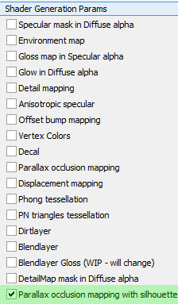
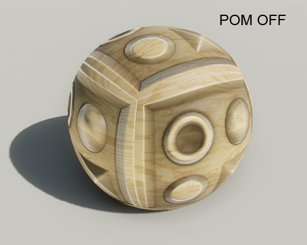
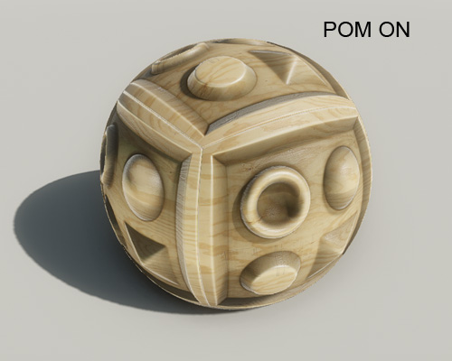
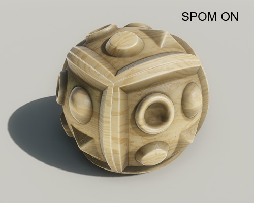
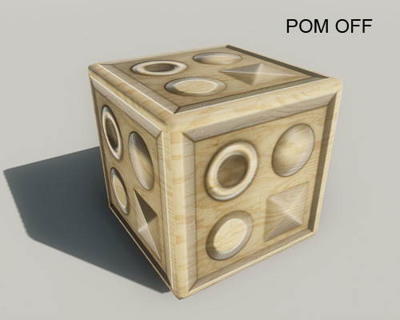
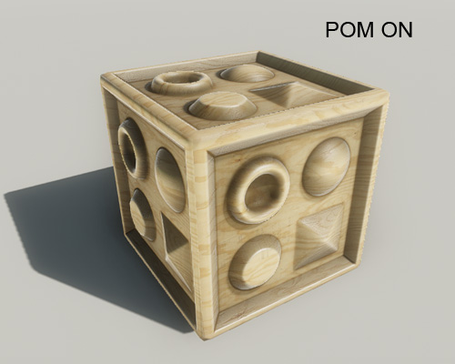
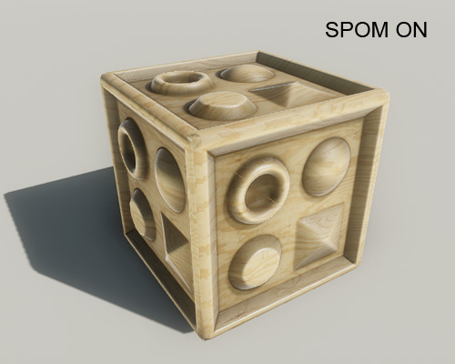

Silhouette POM
Silhouette Parallax Occlusion Mapping is similar to how Parallax Occlusion Mapping - Shader Generation Params is set up. It's essentially a mix between POM and tessellation.
While it is heavier on performance than POM, it affects the silhouette of the mesh as it would with a tessellated object, without actually being tessellated. Silhouette POM is for PC on "very high" spec only.
Setting up Parallax Occlusion
The SPOM texture and shader setup is the same as for Parallax Occlusion Mapping - Shader Generation Params:

The only difference is that there are a two additional Parameters for SPOM.
| Param | Description |
|---|---|
| Number of steps | Number of steps taken per pixel to trace the height map along the view ray. More steps will result in more precise surface reconstruction at the expense of performance. Use this value to optimize shader performance. Low frequency height maps can often use fewer steps without noticeable quality impact. |
| Step size view independence | Value to further fine tune performance. Adjusts the number of steps taken based on angle between view ray and surface. Lower values will keep samples distributed equally while higher values will result in a view dependent distribution of samples; that is, more samples will be taken for grazing angles, fewer samples taken for pixels the viewer looks at dead on. The upper limit will always be the value for the number of steps specified above. |
Comparison: SPOM vs POM
 |  |  |
 |  |  |
On objects like this one SPOM should really only be used when the silhouette is affected. SPOM doesn't come as cheap as POM and is also more easily subject to artifacts.